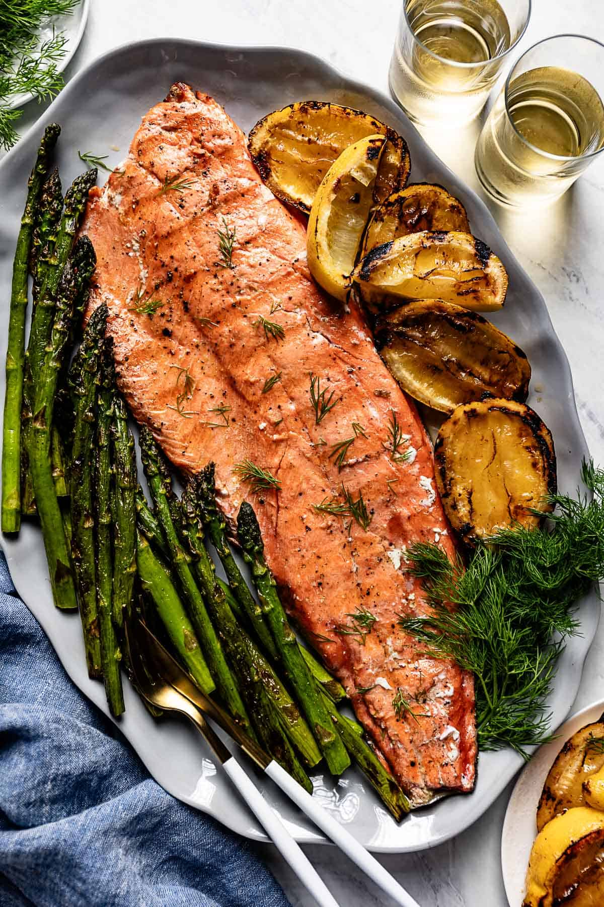

Perfectly grilled salmon fillet with lemon and herbs for a healthy dinner

Prep Time
15 minutes
Cook Time
12 minutes
Servings
4 people
Difficulty
Medium
Ingredients
4 salmon fillets (6-8 oz each), skin-on
2 tablespoons olive oil
2 lemons (1 for juice, 1 for garnish)
3 cloves garlic, minced
2 tablespoons fresh dill, chopped
1 tablespoon fresh parsley, chopped
1 teaspoon dried oregano
Salt and pepper to taste
Lemon wedges for serving
Fresh herbs for garnish
Instructions
Prepare the salmon: Pat the salmon fillets dry with paper towels. This helps the seasoning stick and ensures even cooking.
Make the marinade: In a small bowl, whisk together olive oil, juice of 1 lemon, minced garlic, dill, parsley, oregano, salt, and pepper.
Marinate the fish: Place salmon fillets in a shallow dish and pour the marinade over them. Let marinate for 10-15 minutes at room temperature.
Preheat the grill: Heat your grill to medium-high heat (400-450°F). Clean and oil the grates to prevent sticking.
Grill the salmon: Place salmon fillets skin-side down on the hot grill. Close the lid and cook for 4-6 minutes.
Flip and finish: Carefully flip the salmon using a spatula and cook for another 4-6 minutes, or until the fish flakes easily with a fork and reaches 145°F internally.
Rest and serve: Remove from grill and let rest for 2-3 minutes. Serve with lemon wedges and fresh herbs.
Tips & Variations
For perfect doneness, cook until the salmon reaches 145°F internally or flakes easily with a fork.
If you don't have a grill, you can cook this in a hot skillet with a little oil.
Try different herbs like thyme, rosemary, or basil for variety.
Add a splash of white wine to the marinade for extra flavor.
Serve with grilled vegetables or a fresh green salad for a complete meal.
For a crispy skin, start skin-side down and don't flip until the skin is golden and crispy.